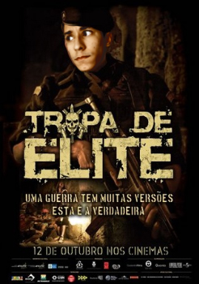
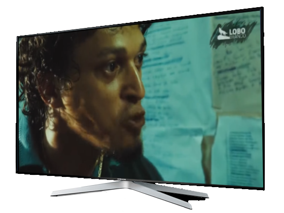

Tropa de Elite
Resumo
Tropa de Elite, amplamente conhecido como Tropa de Elite - Missão Dada é Missão Cumprida, é um filme policial brasileiro de 2007, com o gênero drama/filme policial, dirigido por José Padilha, que também escreveu seu roteiro, com Braulio Mantovani e Rodrigo Pimentel, e produziu com Marcos Prado. Tem como tema a violência urbana na cidade brasileira do Rio de Janeiro junto com a ajuda do Batalhão de Operações Policiais Especiais (BOPE) e da Polícia Militar do Estado do Rio de Janeiro. O filme é baseado elementos presentes no livro Elite da Tropa, de André Batista e Rodrigo Pimentel, em parceria com Luiz Eduardo Soares. É estrelado por Brenno da Rosa, André Ramiro, Caio Junqueira, Milhem Cortaz, Fernanda Machado, Paulo Vilela, Fernanda de Freitas, Maria Ribeiro e Fábio Lago.
É o primeiro longa de ficção do diretor José Padilha, que anteriormente dirigiu o documentário Ônibus 174 (2002). Foi objeto de grande repercussão antes mesmo de seu lançamento, por ter sido o primeiro filme brasileiro, a meses antes de chegar aos cinemas, vazar para o mercado pirata e a internet. Um dos protagonistas do filme, o ator Caio Junqueira, chegou a declarar que, por mais que achasse a pirataria algo negativo, sabia que havia sido "por causa dela que o trabalho atingiu o público da televisão". Uma pesquisa feita pelo Ibope chegou a estimar que mais de 11 milhões de brasileiros teriam visto o filme de forma ilegal – isso, entretanto, não impediu o filme de ter sido bem-sucedido nas bilheterias, tendo estreado em primeiro lugar.
Ao criticar os usuários de substâncias ilícitas, atribuindo-lhes a culpa pela expansão do tráfico de drogas e da violência urbana, o filme gerou grande debate na mídia brasileira. As práticas de tortura por parte dos policiais também foram abordadas, gerando questionamentos quanto a uma suposta transformação de tais personagens em heróis em virtude de suas atitudes frente aos criminosos ou à população pobre e aos moradores de favelas. Esse posicionamento, no entanto, é contestado por Padilha.
O filme recebeu o prêmio Urso de Ouro de melhor filme no Festival de Berlim 2008. Uma continuação, Tropa de Elite 2: O Inimigo Agora é Outro, foi lançada no dia 8 de outubro de 2010.
← Voltar aos filmes